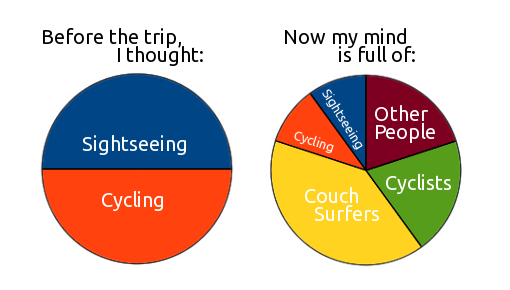
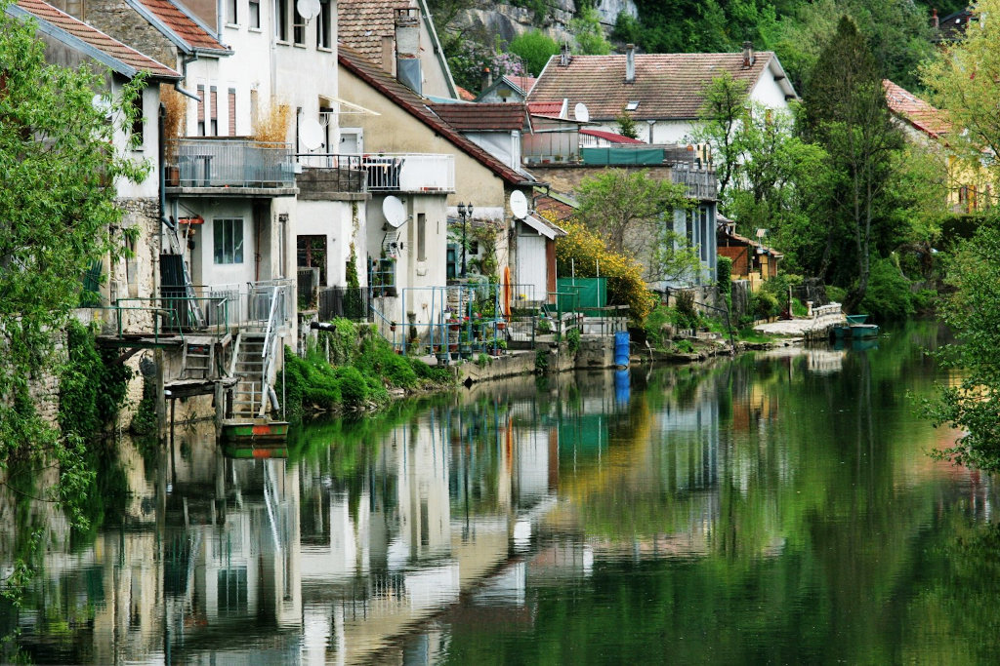
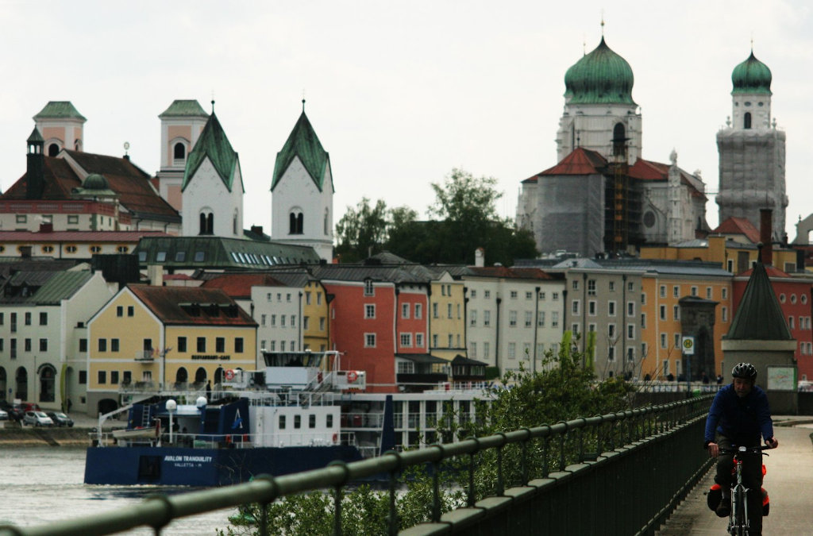
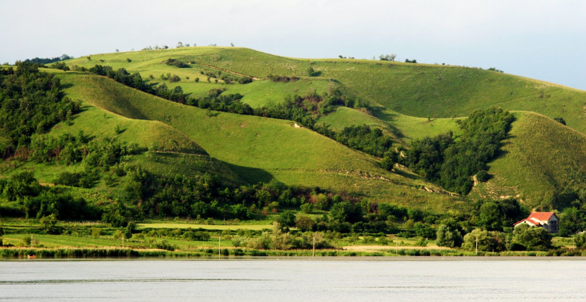
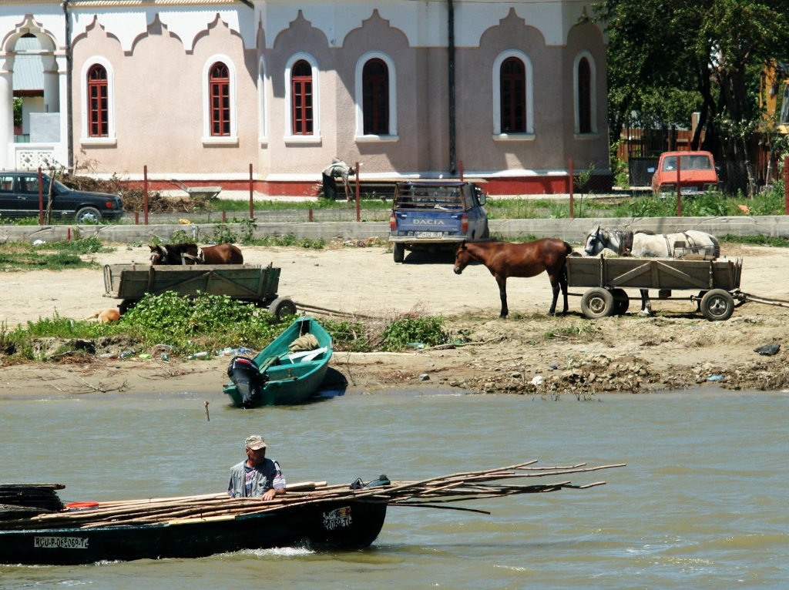
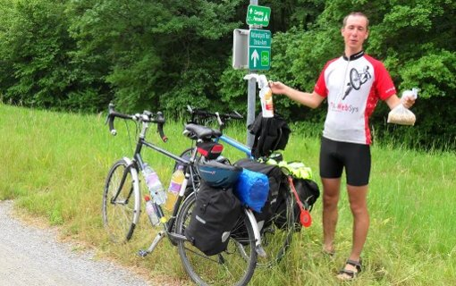

Eurovelo is a network of long distance bicycle routes, most of which are still under development as of 2012. Eurovelo 6 is a path from the Atlantic to the Black Sea. It leads accross Europe through France, Switzerland, Germany, Austria, Slovakia, Hungary, Serbia, Bulgaria, and Romania.
See where I slept on a larger map
Why bicycle touring?
Travelling is healthy for the mind, cycling for the body. I’ve been a fan of both for a while and wanted to combine them. Turns out there are extra benefits to bicycle touring: It is the right speed to travel. Cars are too fast, walking is too slow. Cycling is fast enough to reach places, and slow enough to see them. The locals will love you. They’re tired of buses full of tourists who jump out, take a picture of the famous castle, jump back in, and speed off. A bicycle rider, you are out there in the open where everyone’s equal. You get to see both the expected and the unexpected, the mundane and the extraordinary.
Some more advantages include being able to eat as much as you can of whatever you want without getting fat, not having problems falling asleep, getting leg muscles of steel, awesome tan, new friends, stories to tell. Today morning feels like years ago, so much has happened since. A month ago feels like yesterday, the memories are so vivid.
Expectations vs. reality

CouchSurfers
CouchSurfing is rather time consuming, so I planned to surf only in the beginning, when it was too cold, and sleep in a tent later on. However, it wasn’t just a convenient way to sleep for free, but primarily a great way to spend time with the locals and get to know the culture.
I cannot overstate the importance of CouchSurfing for my trip. All my hosts took excellent care of me and we had lots of fun.
The experiences were quite varied: I met travellers, students, teachers, photographers, programmers, (organic!) farmers, pick-up artists, baristas, flutemakers, dumpsterdivers, CEOs, builders of self-sustainable houses, psychotherapists, nuclear power plant managers, orangina tasters, hikers, bikers, artists, clowns, actors, soccer fanatics, etc. It has been extremely enriching and there just isn’t enough space here to describe it.
Bicycle tourists
A reminder that I’m not insane. Or at least not the only one. There were so many! If I felt lonely for some reason, only spending each evening with new people, bicycle tourists for the rescue! Perhaps unsurprisingly, most are either young (studying or just finished) or old (retired). Not many inbetween.
Here are the cyclists who deserve special mention for their heroic feats:
-
Olek, racing for three days, sleeping outside in rain with no tent
-
Salome, rode a fixed gear from London to Basel and now rides it as a bicycle messenger
-
Norman, from London to Venezia and then from Egypt to South Africa in 3 months
-
Martin, wanted to beat the bike around the world record, gave up and was doing London-Istanbul in two weeks with average of measly 150-270km per day (funny thing, we met in the rain after Vienna, next to the Donauinsel where everyone gets lost, just as Martin was coming back from the dead end while I was heading towards it).
Furthermore, Dad joined me for a week, Kev and Mat rode with me for two days, and Mauro and Jole let me camp with them on the Black Sea beach. Many more deserve mention, but there’s not enough space.
The Countries
It would be tiring to read my daily journals, so here are the highlights and summaries for the different countries. These reviews do not include CouchSurfers, it would send the scores through the roof (except Romania).
France
Glad to have started there. Apart from great bread, wine, and cheese, France had best signposted cycle paths with good surfaces. And apart from Serbians, the French were the most hospitable people. Once I was spotted by a group of about 25 elderly cyclists who were having a pique-nique. They waved and shouted at me until I turned my bike around and went to see them. I was provided generous amounts of wine, bread, cheese, saucisson, wine, cheese, wine, … Viva la France!
My only complaints about France would be the unreasonably high price of the pensions/chambres d’hotes, and the weather. Supposedly April is the most beautiful month. Everyone tells me I got unlucky.

Switzerland, Germany, and Austria
All three have very pictoresque towns and villages.
Switzerland is expensive! Nine francs for one beer was quite a surprise. In Romania, you can have a three course meal for that. In a four star hotel.
Germany is the country with no internet. But with cheap food and accommodation. Unless there’s a party going on, the Germans are rather reserved. Hello, thank you, good bye.
I’ll never forget the terrible headwind in Austria. Otherwise, Austrians are just Czechs who happen to speak German. Pretty cool.

Slovakia and Hungary
In and out of Slovakia. People stopped responding to my greetings. Starting to look like Eastern Europe even though you can still pay in euros.
Hungary is the country where köszönöm means thank you. First real language barrier. Good food, friendly people. Budapest is an amazing city.
Serbia
Serbians are the most hospitable people. They don’t have much, but are eager to share it all with you. Strangers bought me beers. When I was buying a couple of tomatoes and a bag of strawberries I got the bag of strawberries for free. Using Antoine’s trick, I asked for water near Belgrade, and the family offered me a tasty dinner and later a comfortable bed. They spoke Serbian, I spoke Czech, we didn’t understand each other much, and somehow it wasn’t a problem.
Apart from that, the bicycle paths go on rather reasonable roads with not much traffic and there are awesome funny/silly/wise quotes on the Eurovelo signposts.

Romania and Bulgaria
Andrei says that Romania would be a beautiful country if it wasn’t full of Romanians. That’s so wrong! Romanians are very nice, but the country sucks. There’s no internet, it’s full of rabid dogs, and there are no hotels anywhere except Constanta/Mamaia, where there’s 10km of nothing but hotels lined up next to each other. Perfect vacation.
There are no city centers, no main squares. In villages, there’s the Main Street. The occupation of Romanians is to sit on the benches in front of their houses on the Main Street and Greet Cyclists.
The kids high-five you while the elders wave and shout something incomprehensible. Unfortunately, the language barrier is insurmountable, as vast majority of Romanians only speak Romanian. I speak enough to ask for water and say thank you, so that’s what the conversations are limited to.
Bulgaria differs from Romania in two aspects: It’s about half the price and Bulgarian is a slavic language. Too bad I couldn’t spend more time there.

Where are the photos?
Well, that’s a bit of a touchy topic. I’m afraid of taking pictures of people. Most get scared of the big camera and start acting in strange ways. You need to be really careful. The Indians don’t let you take a photo of them because it takes away their soul. That’s wise. A photographer needs to be able to capture the soul without taking it away. Not sure I can do that. Not yet, perhaps.
So, I have a couple of photo galleries from my trip. Along la Loire to Orleans, rest of la Loire plus Saone and Doubs, Switzerland and Germany, Austria, Slovakia, and Hungary, and Serbia, Bulgaria, and Romania. I’m even really happy about some of the pictures. But, I didn’t take the most important ones…
Summary
This trip was by far the greatest thing that ever happened to me, thanks to all the people I met. If you read this far, do yourself a favor, quit your job, go buy a bicycle and get a ticket to Saint-Nazaire.
